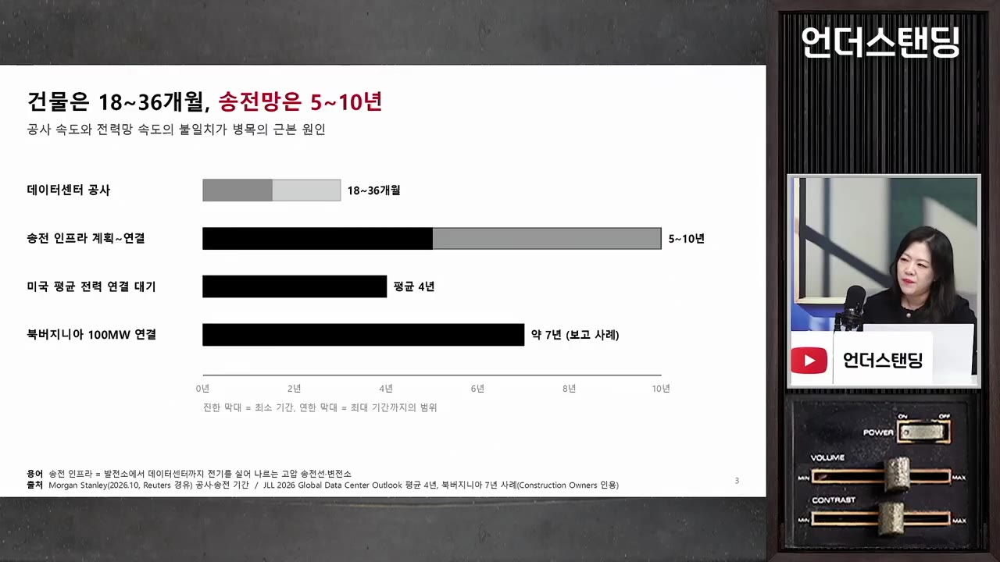
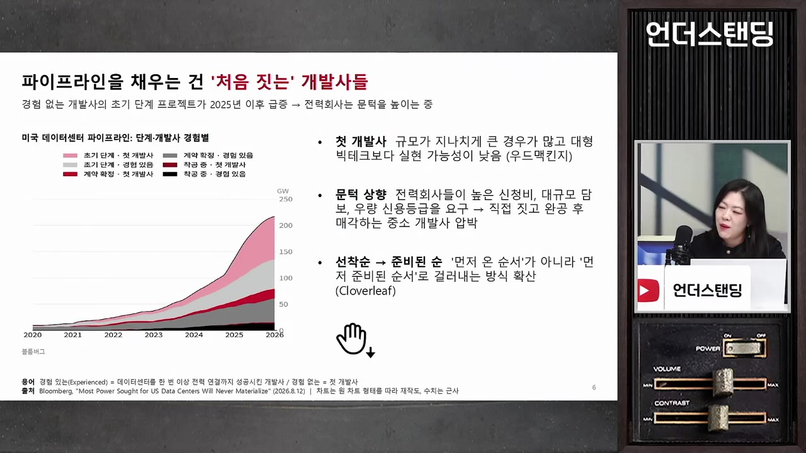
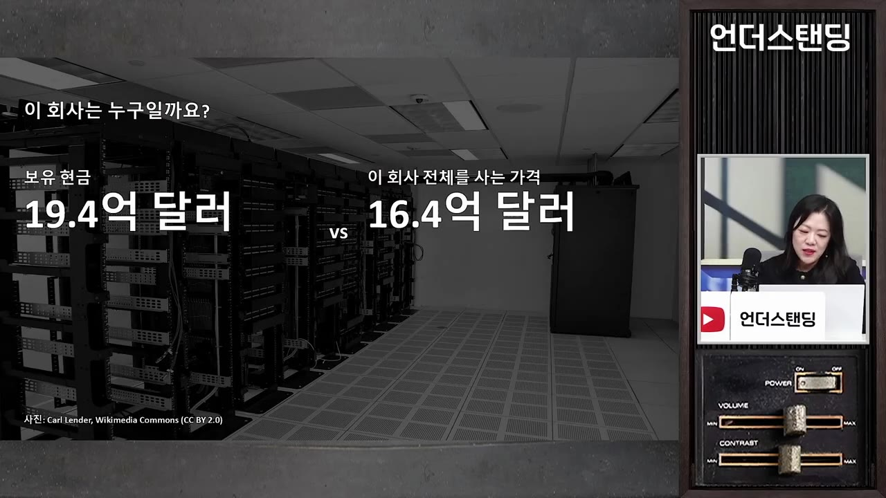
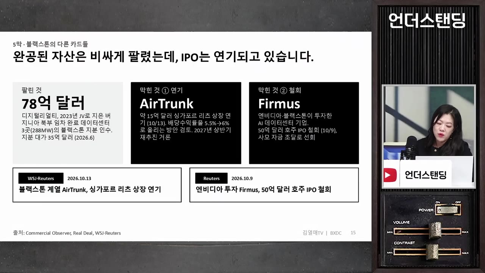

4배 부풀려진 데이터센터 허수 투자. 건물 다 지어도 전기 대기만 10년. 데이터센터 빚더미 쌓인다 (더큐리어스 김열매 대표) | 26년 11월 9일 방송
▶ 원본 영상 보기한눈에 보기
- 미국 데이터센터의 진짜 문제는 인허가 중단이 아니라 전력 연결 시차(5~10년)와 그 사이 쌓이는 금융 부담이라는 진단이다.
- 전력 연결 요청은 1,000GW가 넘지만 중복 신청이 많아 실제 가능성은 28% 안팎(약 4배 부풀림)이라고 한다(우드매킨지 분석).
- 임차 계약 없이 짓는 투기적(스펙) 개발과 경험 없는 개발사 비중이 커서, 블랙스톤 상장 리츠 부진·사모대출 채권 매각설이 불안 신호로 거론된다.
- 반대로 수요는 여전히 넘치므로, 전력이 천천히 풀리면 사이클이 완만하게 이어지는 낙관 시나리오도 가능하다.
- 변수는 내년 의회의 원전·가스발전 확대와 규제 방향, 그리고 문제가 터졌을 때의 수습 방식이다. 출연자는 "팔지 말고 어떻게 해결하는지 보라"고 조언한다.
이런 분께 도움이 됩니다
- 미국 데이터센터·전력주·반도체 주가가 왜 흔들리는지 구조로 이해하고 싶은 분.
- 사모대출·상장 리츠 같은 금융 쪽 위험 신호를 어떤 지표로 볼지 알고 싶은 분.
핵심 내용
핵심 주장: 병목은 전기, 위험은 금융
- 데이터센터 건물 공사는 18~36개월이면 끝나지만, 송전망 연결은 5년에서 10년이 잡히고 있다. 건물을 다 지어도 전기가 안 들어오는 시차가 생겼다. (1:33)
- 처음엔 전력 연결이 2~3년이면 되리라 보고 공사 일정을 짰다. 신청이 폭증하며 대기가 길어졌다.
- 이 때문에 건설 공사도 속도를 조절하고 있다. 전기가 없으면 건물만 빨리 지을 이유가 없기 때문이다.
- 출연자가 가장 걱정하는 것은 공사·전력이 지연될 때 사업자의 금융 비용 부담이 계속 커진다는 점이다. (26:17)

💡 건물보다 전기가 늦게 오는 순간, 대출이자는 먼저 돌기 시작한다.
🔁 전력 지연이 금융 부담으로 번지는 순서
- 신청 폭증
- 연결 대기 장기화
- 건물 완공, 전기 없음
- 금융 비용 누적
- 취소·부실 우려
- 1신청 폭증
빅테크·개발사가 전력 연결을 너도나도 신청한다.
- 2연결 대기 장기화
송전망 연결이 5~10년으로 늘어난다.
- 3건물 완공, 전기 없음
공사는 끝났는데 가동을 못 한다.
- 4금융 비용 누적
빚으로 지은 사업자의 이자 부담이 커진다.
- 5취소·부실 우려
약한 사업자부터 주문 취소나 디폴트 위험이 생긴다.
터빈 주문: 가수요 의심
- 기존 전력망 연결이 오래 걸려 온사이트(현장) 발전(원전 대신 가스터빈 등)을 계획하는데, 여기서도 병목이 생겼다. 가스터빈 1등 GE Vernova(자막상 "G번호바")에 지금 주문하면 2032년에 나온다고 한다. (5:30)
- 빅테크가 몇 기씩, 큰 곳은 10GW를 가스터빈으로 돌리겠다고 신청하면서 터빈부터 주문했다. "전력이 나올 땅"이면 일단 주문부터 넣는 식이다.
- 터빈 업체는 가수요를 의심해 선수금을 높였다. 돈을 걸지 않으면 제작하지 않는다는 방식이며, 출연자는 최근 사례로 봤다.
- 그래서 수주잔고가 늘어도 주가가 빠진다. 발주처 중 몇 곳이 진짜 지을 수 있는지가 핵심이 됐다. (6:31)
- 일론 머스크가 소프트뱅크의 터빈 주문 취소와 디폴트 가능성을 SNS에 언급했다. 출연자는 이를 소송감이라며 사실 확인 없이 전달하는 수준으로만 말한다. (26:46)
- 출연자의 시각: 취소(오더컷)가 일부 나오면 가짜 수요가 걸러지고, 진성 고객이 선수금을 내고 주문하면 시장이 오히려 긍정적으로 볼 수 있다. 다만 당장은 싫어할 것이라고 본다.
부풀려진 수요: 1,000GW 신청
- 우드매킨지가 8월에 분석한 미국 데이터센터 전력 연결 요청은 1,000GW 초과다. 이는 미국 전체 현재 전력 사용량 규모다. (10:05)
- 실제 실행 가능성은 28% 정도로, 약 4배 뻥튀기라는 평가다.
- 중복 신청이 원인이다. 한 회사가 여러 부지에, 여러 SPV(페이퍼컴퍼니)로, 지역별 전력회사(PJM, 텍사스 ERCOT 등)마다 신청한다. 각 전력회사는 자기 몫만 알기에 집계가 안 됐다.
- 텍사스는 세제 혜택, 셰일가스, 태양광, 넓은 땅 때문에 신청이 가장 많다. 6월 기준 약 474GW였고 9월엔 500GW를 넘었다는 보도가 있다. 8월까지 송전 승인은 약 9.5GW 수준이다(자막상 숫자 불분명).
- 비교 기준: 2025년 말 미국 전체 상업용 데이터센터 재고가 약 53GW다. 원전 1기는 약 1GW이고, 가스발전소는 아무리 커도 1GW를 넘기 어렵다. (13:26)
💡 신청 건수가 아니라 실제 승인·착공 건수를 봐야 한다.
인허가 제한: 정치 쟁점의 실제 의미
- 텍사스 주지사(공화당)가 이미 9월에 전기요금 영향 분석과 대책이 나올 때까지 신규 인허가를 하지 않겠다고 했다. 민주당만의 주장이 아니라 주민 반대 여론이 높아진 결과다. (16:40)
- 인허가는 전력·환경영향평가·건설 등 단계가 여럿이라, 어느 단계까지 막을지는 지켜봐야 한다.
- 최근 기류는 전면 금지보다 "전기요금 문제를 해결할 방법을 가져오면 허가" 같은 조건부에 가깝다.
- 신청 기업 대부분이 아직 초기 단계라는 점은 그나마 다행이다. 이미 많이 진행됐다면 중간 디폴트 우려가 더 컸을 것이다.
투기적(스펙) 개발과 경험 없는 개발사
- 스펙 개발은 임차인 없이 투기적으로 먼저 짓는 방식이다. 미국 부동산에서 오피스·쇼핑몰·아파트로 오래 해 온 방식이라 우리의 아파트 선분양과 비슷하다. (7:05)
- 2021년 클라우드 수요만 보고 일찍 들어간 곳은 4년 만에 4배에 팔리기도 했다. 2024~25년에 돈이 된다는 신호가 나오며 오피스·물류센터 개발사까지 몰렸다.
- 캐나다 출신 연예인이 땅을 샀다가 파산할 것 같다는 기사가 나온 사례도 언급된다.
- 개발사 분석 차트(출연자 해석): 경험 있는 개발사가 착공한 물량이 바닥에 있고, 위쪽의 경험 없는 개발사 + 계약 미확정 초기 단계가 대략 절반 가까이다. 수치의 정확성은 출연자도 장담하지 않는다. (19:21)

- 임대료가 폭등하고 미국 데이터센터 공실률이 1%라 "짓기만 하면 돈이 된다"는 분위기가 개발사의 빚투를 불렀다. 머스크가 먼저 지어 임대한 것이 가장 영리한 플레이였다는 평가다.
- 머스크가 네오클라우드를 구피에 비유하며 "200개 이상"이라고 한 것에 출연자는 놀랐다. 아는 곳은 열몇 개인데, 법인만 세운 초기 기업이 많은 듯하다.
💡 수요가 꺾이는 문제와 전기 때문에 못 짓는 문제는 성격이 다르다. 지금은 후자다.
블랙스톤: 상장 리츠 부진과 엑시트 신호
- 블랙스톤 디지털 인프라 트러스트(BXDC 계열로 보이나 티커는 자막에 없음)가 5월 14일 상장했다. 약 20억 달러이며, 블랙스톤·임직원 2억 달러, 공모 17.5억 달러다. (35:22)
- 완성된 신축·안정화·임대차 완료 자산만 사겠다는 블라인드 리츠이고, 목표 배당은 연 5.75~7%다.
- 상장 일주일 후 15% 올랐지만, 공모가 대비 약 20% 하락(고점 대비 30%+)했다.
- 현금 약 19.4억 달러 대비 시가총액 약 16억 달러로, 현금보다 싸게 거래된다. 편입 자산은 아직 거의 없다.

- 시장의 의심은 좋은 자산은 기관끼리 돌리고 나쁜 것을 개인 리츠에 넘길지 모른다는 이해충돌 우려다.
- 상장 6개월이 되는 11월 15일부터 연 1% 운용보수가 시작된다.
- 엑시트 시도로 읽히는 정황: 78억 달러 규모를 디지털 리얼티에 매각했고, AirTrunk(싱가포르)와 Firmus(호주, 엔비디아도 투자) 상장은 밸류에이션 이견으로 지연·무산됐다. (47:22)

- 출연자는 블랙스톤의 초기 투자(2021년 QTS 인수 등)는 성공적이라고 인정한다. 문제는 가격이 올라서 파는 게 어려워졌다는 점이다.
사모대출과 금융 연결고리
- 사모대출의 걱정이 SaaS 기업 대출에서 데이터센터 대출로 옮겨 가는 단계라고 본다. 메타 하이페리온 프로젝트는 90%가 대출이며, Blue Owl(자막상 "블루하울")이 주선했다. (48:32)
- 보험사·연기금은 사모펀드에 투자하고, 은행은 SPV의 건설공사비 대출을 해 준 곳이 있어 보인다. 이 대목이 파급을 키울 수 있다.
- 로이터 보도로, 약 5억 달러 규모 데이터센터 대출 채권을 투자자가 매각하려 한다는 소식이 나왔다. 만기 5~10년이라 보통 안 파는 자산이어서 이상 신호로 본다. 다만 단순한 포트폴리오 리밸런싱일 수도 있다. (53:12)
- 엘리자베스 워런 상원의원이 사모펀드 정보 공개를 요구해 왔고, 내년 금융 관련 위원회 요직을 맡을 수 있어 부채 공시 요구가 늘 전망이다.
낙관 시나리오와 반론
- BREIT(블랙스톤 비상장 리츠)의 선례: 오피스 침체로 2022년 11월 환매 요청이 몰렸으나, 2024년 2월 전액 충족해 약 15개월 만에 해소했다. (57:01)
- 환매에 분기 한도가 있어 한 번에 빠지지 않는다. 기다려 보니 괜찮아져서 환매를 철회하는 투자자도 생긴다.
- 반전: 그때 BREIT를 살린 것이 2021년부터 늘린 데이터센터였다. 이번엔 구원 투수가 문제의 당사자라서 같은 경로를 단정하기 어렵다.
- 가장 낙관적인 시나리오: 전기가 천천히 풀리면서 약한 사업자가 정리되고, 자금력 있는 빅테크가 전기 연결 시점에 맞춰 칩을 사 넣는다. 사이클이 급락 없이 완만하게 이어지고 전력 장비·반도체 수요도 계속된다. (1:02:14)
- 최종 수요자인 OpenAI·Anthropic이 성장해 높은 임대료를 감당하면 시장은 괜찮다.
의회·정치 변수
- 2025년 7월 트럼프 행정부의 AI 액션 플랜(자막상 "AI 액션 액트")이 연방 규제를 풀고 주에 빠른 건설을 촉구했고, 이후 신청이 폭증했다. 내년 의회는 이를 되돌리는 쪽으로 움직일 수 있다. (1:08:02)
- 반대 논리: 세수, 건설 노동자, GDP 기여, 401K 등 주식 자산 때문에 성장 엔진을 끄기 어렵다. 래리 핑크도 데이터센터 모라토리엄에 경고한다.
- 내년에 원전·가스발전을 빠르게 확대할지, 지지부진하게 끌지가 갈림길이다. 지지부진하면 사업자의 금융 부담이 더 커지고, 전력 병목이 전력주 호재로만 읽히기 어렵다.
- 출연자의 입장: 결론은 알 수 없는 진행 과정이며, 지금은 비중을 조금 줄이고 눈치를 보겠다.
2008년 조선 엔진 경험담: 오더컷의 충격
- 출연자는 2008년 컨설턴트로서, 큰 배 발주가 쏟아지자 소형선용 중속 엔진 주문까지 비정상적으로 늘어난 것을 보았다고 한다. 과잉 발주였고, 이후 오더컷과 가동 중단이 몇 년에 걸쳐 이어졌다. (28:12)
- 호황기엔 아무도 의심하지 않는다. 큰 선주는 투기 발주를 하지 않지만 투기 선사가 있었다.
- 이번엔 선박 엔진까지 데이터센터용으로 발주됐다는 얘기를 이상 신호로 본다. (31:21)
- 금융 문제만 풀리면 다시 오겠지 하지만, 과잉 발주분은 돌아오지 않았다.
💡 모두가 낙관할 때 의심하고, 모두가 비관할 때도 의심하라.
위기 때 보는 방식
- 2023년 SVB 사태처럼 주말에 당국이 수습한 선례가 있다. 텍사스 지역 은행·보험사 쪽에서 문제가 터지면 어떻게 수습되는지가 관건이다. (1:12:10)
- 출연자의 결론: 터졌다고 팔기보다 터졌을 때 어떻게 해결하는지를 보고, 긍정 뉴스도 같이 보라. 나쁜 시나리오를 미리 알면 충격이 줄어든다.
기억할 숫자·인용
- 전력 연결 요청 1,000GW+ → 실행 가능성 28% (약 4배 뻥튀기)
- 송전망 연결 5~10년 vs 건물 공사 18~36개월
- 미국 상업용 데이터센터 재고 약 53GW(2025년 말), 공실률 1%
- 터빈 신규 주문 납기 2032년, 선수금 요구 (영상 말미 아닌 6:31 부근)
- 블랙스톤 상장 리츠: 현금 19.4억 달러 vs 시총 16억 달러, 운용보수 연 1% (11월 15일부터)
- BREIT 환매 요청 해소까지 약 15개월(2022.11~2024.2)
- "당신의 마진은 누군가의 사업 기회다."
생각해볼 점
- 영상 속 수치(1,000GW·28%, 개발사 비중 차트)는 출연자가 인용한 2차 보도이며, 출연자도 정확도를 확신하지 않는다. 원자료 확인이 필요하다.
- 블랙스톤 리츠 부진이나 채권 매각설은 정황이고, 부실의 증거가 아니다. 출연자도 "나쁘다고 단정하지 않는다"고 했다.
- 출연자는 2008년 경험의 트라우마를 밝히고 있어 비관 쪽 편향이 있을 수 있다. 반대로 낙관론도 같은 정도로 검증해야 한다.
- (내 의견) 전력주·반도체 수혜는 신규 수주 신호가 아니라 취소 비율과 선수금 납부 여부로 구분해 보는 것이 더 선명하다.
바로 해볼 일
- 내가 보유한 전력·반도체 종목의 수주 증가가 선수금 동반인지 실적 발표에서 확인하기
- 11월 15일 이후 블랙스톤 디지털 인프라 리츠의 자산 편입·주가 변화 추적하기
- 사모대출 채권 매각 보도와 환매 요청 뉴스가 늘어나는지 주 1회 점검하기